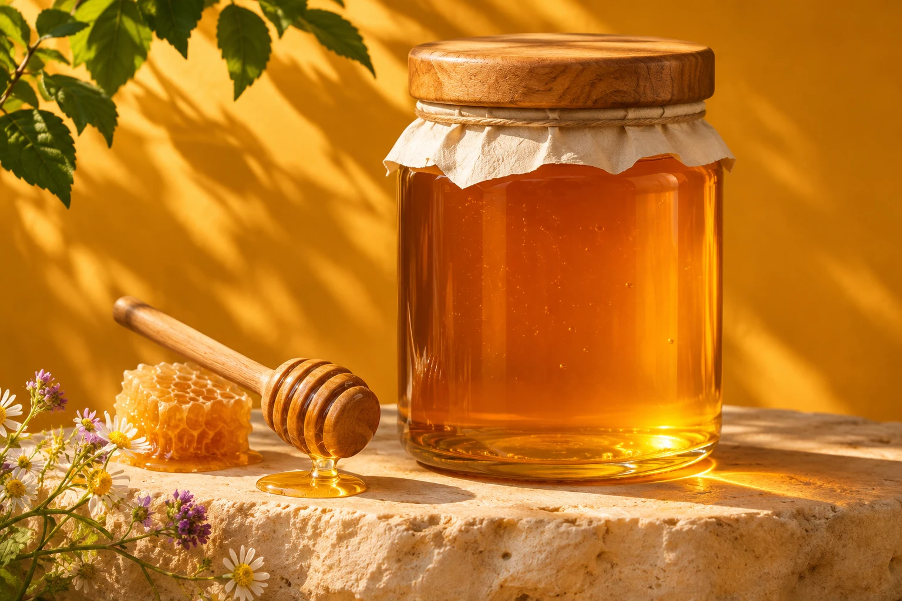
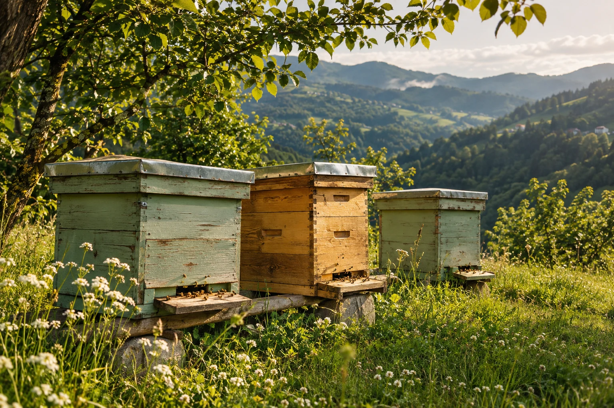
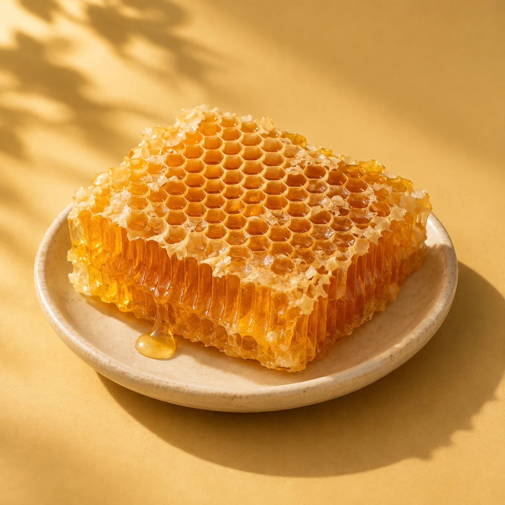

İyi balın
bir hikâyesi var.
Çiçekten kovana, kovandan sofranıza.
Günün en güzel başlangıcı için
kendinize bir kavanoz ayırın.
Doğanın tadını çıkar.

Yayladan bir sofra hikâyesiSana göre bir kavanoz.
Hafif ve çiçeksi mi, yoğun ve karakterli mi?
Sevdiğin lezzeti bul, gramajını seç.
Ürünler, görseller ve fiyatlar demo sunumu içindir. Marka ve gerçek ürün bilgileri işletmeyle birlikte netleştirilir.

Küçük bir kovandan, kocaman bir sofraya.
Doğanın ritmine
bir yer açın.
Bir kavanoz bal; çiçeklerin, arıların ve emeğin buluşması. Bizce iyi bir sofra, neyi sevdiğinizi bilmekle başlıyor.
Çiçek balıyla yumuşak bir başlangıç yapın, kestanenin yoğun aromasını keşfedin veya peteğin doğal dokusuna yer açın.
Kendi lezzetini bul
Bir kaşık bal.
Binbir güzel eşlikçi.
Sıcak bir dilim ekmek, taze bir peynir veya yoğurdun üzerine küçük bir dokunuş. Sevdiğiniz ritüelinize biraz tat katın.
Kahvaltını tamamla
Merak edilenler.
Seçimden siparişe, ihtiyacınız olan bilgiler.
Hangi balı seçmeliyim?
Hafif ve çiçeksi bir tat için çiçek balını, belirgin bir aroma için kestane balını seçebilirsiniz. Her ürünün detayında lezzet ve gramaj bilgileri yer alır.
Kargo ücreti nasıl hesaplanıyor?
İndirim sonrası 750 TL ve üzeri alışverişlerde ücretsiz, altındaki siparişlerde 65 TL. Sepette tüm tutarlar birlikte gösterilir.
Balın kristalleşmesi normal mi?
Bal zamanla kristalleşebilir; bu doğal bir süreçtir. Serin, kuru ve doğrudan güneş almayan bir yerde, kapağı kapalı saklayın.
Tahlil ve ürün belgelerini görebilir miyim?
Ürün detaylarında sentetik verilerle hazırlanmış örnek analiz kartlarını inceleyebilirsiniz. Bunlar gerçek tahlil belgesi değildir. Gerçek mağazada doğrulanmış parti belgeleri işletme tarafından sağlanacak.
Bu demoda gerçek sipariş verebilir miyim?
Burada mağaza deneyimini güvenle deneyebilirsiniz. Siparişler yalnızca bu tarayıcıda demo olarak saklanır. Gerçek ödeme alınmaz ve WhatsApp mesajı gönderilmez. Lütfen gerçek kişisel bilgi girmeyin.
Bal, 1 yaşından küçük bebekler için uygun değildir. Arı ürünlerine karşı alerjiniz varsa dikkatli olun.